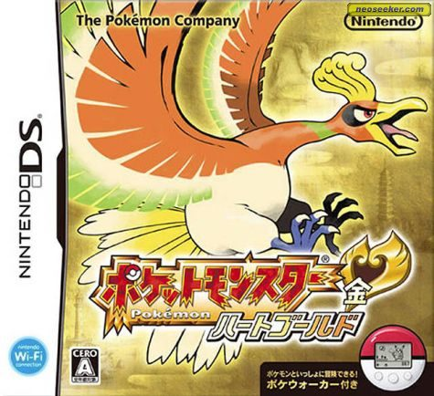

Pokemon Heart Gold
Information
This is our second game.
As a way to ease the transition, I'll write the sentences and vocabulary in kanji, but you'll still have the pictures with kana.
Vocabulary
- ポケット - 【ポケット】★★★★
pocket - モンスター - 【モンスター】★★
monster - 世界 - せかい 【世界】★★★★★
the world, society, the universe - ようこそ - 【ようこそ】
welcome!, nice to see you! - わし - わし【私】
I, me (used by elderly males) - 名前 - なまえ 【名前】★★★★★
name, full name - 男の子 - おとこのこ 【男の子】★★★★
boy, male child, baby boy - それとも - それとも 【其れ共】
or, or else - 女の子 - おんなのこ 【女の子】★★★★★
girl, daughter - どちら - どちら【何方】 ★★★★★
which one (esp. of two alternatives) - 教える - おしえる 【教える】★★★★★
to teach, to instruct - くれる - くれる 【呉れる】★★★★★
to give, to let one have, to do for one, to be given - では - 【では】★★★★★
then, well, so, well then - アンキ - Character name in the course
- 準備 - じゅんび 【準備】★★★★★
preparation, setup, arrangements, provision, reserve - 夢 - ゆめ 【夢】★★★★★
dream - 冒険 - ぼうけん 【冒険】★★★
risk, venture, adventure - レッツ - Let's
- ゴー - 【ゴー】★
go (somewhere), go (signal) - テレビ - 【テレビ】★★★★★
television, TV - が - 【が】★★★
indicates sentence subject (occasionally object) - ある - ある【有る】 ★★★★★
to be (usu. of inanimate objects), to exist, to live
Grammar
- へ - 【へ】★★★
indicates direction or goal (e.g. "to") - て - 【て】 ★★★
て-form, connecting verbs - てくれる - To do something for someone
- を - 【を】★★★★★
indicates direct object of action - ない - 【ない】★★★★★
not - いい - 【いい】
good, excellent, fine, nice, pleasant, agreeable - と - 【と】
and - が - Subject particle
- がある - There is
Lesson
ポケットモンスターの 世界へ ようこそ！
Welcome to the world of Pokémon!
.jpg)
ポケット is actually the english word "Pocket".
You'll notice that a lot of words borrowed from english are written in Katakana.
モンスター is "Monster".
世界 (せかい) means world.
We saw before that の is the possessive particle.
So ポケットモンスターの せかい means the "world of Pocket Monsters".
へ is a particle that marks a target, a destination, so it's usually attached to locations, like here.
ようこそ is one of those words you may already know.
It means welcome.
With this new particle we can understand "Welcome to the world of Pocket Monsters".
わしの 名前は オーキド
My name is Professor Oak.
.jpg)
わし is interesting.
You'll notice that it looks like the わたし that we saw before, and you're right, they are the same.
It means "I" or "me".
They are both written 私 in kanji.
So how do we know how to pronounce 私 then ?
You don't, unless there's some furigana over the kanji.
Most of the time, it will be わたし.
わし is usually used by older man. You'll see other words contracted in the same by older characters in games or manga. Oak does it a lot.
We do the same thing in english. Like "watcha" instead of "what are you".
きみは 男の子 かな？ それとも 女の子 かな？
Are you a boy? Or are you a girl?
.jpg)
男の子 (おとこのこ) means boy. You'll notice the の particle between the two nouns.
It's litteraly "child of man".
Likewise, 女の子 (おんなのこ) means child of woman, so "girl".
We saw that かな is made of two particles and means "isn"t it ?", "right ?", "I wonder".
The first sentence means "As for you, (it's) boy right ?"
それとも is a conjunction, like in english, they connect clauses or sentences.
It means "or".
It comes from それ, and the paricles と and も. All very common so we'll see them soon enough.
So the full sentence means "As for you, (it's) boy right ? Or girl I wonder.
どちらかを 教えてくれ
Won’t you please tell me?
.jpg)
どちら means which.
Based on the previous, it's which one between boy or girl.
教えて is the て-Form of 教える to teach, to tell.
The て form is one the second most frequent form of verbs after た.
You'll see it a lot because it connect things together.
Here's it's connected with くれる.
くれ is the imperative form of くれる.
It means to give, but it's used from the persective of the the speaker.
The speaker is receiving something given to him.
くれる is used when someone gives you something.
てくれる is a very common way to say that someone does an action for you.
てくれる is a very common way to say that someone does an action for you.
He's giving you the benefit of the action.
Since it's the imperative form, we can translate it by "Give me the benefit of teaching me ..."
を is the particle that marks the object.
Who receives the action of the verb.
So どちら receives the action of 教えてくれ.
The full sentence means "Give me the benefit of teaching me which one".
きみは 男の子 じゃな？
So, you’re a boy then?
.jpg)
Here's another case of Oak's "old man speech".
If we say きみは 男のおこ だ, it means "As for you, (you're a) boy."
We saw each of those words before.
To turn the sentence into a negative, we use the い-Adjective ない.
To connect the ない to だ, we use the て-Form of だ which is では.
So ではない is the negative form of the copula だ.
And ではない is almost always abbreviated to じゃない which is easier to say.
きみは 男のおこ じゃない means "As for you, (you're) not a boy."
Like in english, if you say this with a rising intonation, it becomes a question.
Here you don't have any doubt because there's a question mark anyway.
Because Oak doesn't like to finish words of sentences, it ends with じゃな instead of じゃない.
That's just Oak.
It's a bit confusing at first because you don't know enough japanese to recognize different speech patters, but you get use to it with time.
では 名前を 教えてくれ！
Please tell me your name.
.jpg)
Here's では again, connecting stuff.
At the start of the sentence, it's a conjunction.
Like in english it connects clause or sentences together.
では means "then", "well" or "so".
We have the exact same てくれ as before, 教えてくれ.
くれる is used when someone gives you something.
てくれる is a very common way to say that someone does an action for you.
てくれる is a very common way to say that someone does an action for you.
He's giving you the benefit of the action.
Since it's the imperative form, we can translate it by "Give me the benefit of teaching me ..."
を marks who receives the action of the verb, in this case 名前.
So the full sentence means "Well then, give me the benefit of teaching me (your) name."
アンキくん じゃな？
Your name is Anki ?
.jpg)
アンキ (Anki) is the name I picked for the character.
It's the name I pick for all jrpg now, and the one you'll see in future games during this course.
You don't really need to remember it, so you can delete this card if you want, but I made one so it could be considered as a known word for when I look for the next text.
じゃな as we saw is Oak's way of saying じゃない.
So the sentence is :"Anki isn't it ?"
くん is attached to my name as a polite suffix.
アンキ！！ 準備は いいかな？
Anki! Are you ready?
.jpg)
準備 means preparation.
いい is of the most important い-adjective.
It means good.
Since we know the rest, we understand: "As for preparation, (they're) good I wonder ?"
A considerable more natural to say this in english is indeed "Are you ready ?".
夢と 冒険と！
Dreams! Adventure!
.jpg)
夢 means dream.
冒険 means adventure.
と is another very common particle. We'll see it often for quoting things.
Here, it's for listing things, nouns.
So, 夢 と 冒険 means dreams and adventures.
What is the second と after 冒険 ?
That's just Oak being Oak.
と is used to make a exhaustive list.
A と B means A and B, and nothing else.
If you want to imply there's more, we would use the particle や instead.
So the second と is like a figure of speech. He's so excited he's about to list something else.
Dreams, adventures, and so much more !
ポケット モンスターの 世界へ！ レッツ ゴー！
Let’s go to the world of Pokémon!
.jpg)
レッツ means Let's.
ゴー means Go.
Again english words are written in Katakana.
ポケット モンスターの 世界へ as we know means "to the world of Pocket Monsters".
テレビが ある……
There’s a TV here...
.jpg)
テレビ is Tv.
Again, english word in Katakana.
が is the most important particle of them all.
It marks the subject of the sentence, the one doing the action.
It's always there in the sentence even when it's omitted.
So all the previous sentences where I put a subject in parenthesis, that was が with the subject, being omitted.
ある means to be, exist.
It's one of the most important verb in japanese with いる.
What's the difference ?
いる is for living things.
A tv is not living, so we use ある.
It would have a been a person or a animal we would have used いる.
So what does it all mean ?
Tv is marked by が, so it does the action of the verb. Being, existing.
Xがある is how we say there is X in japanese.
Same goes for いる.